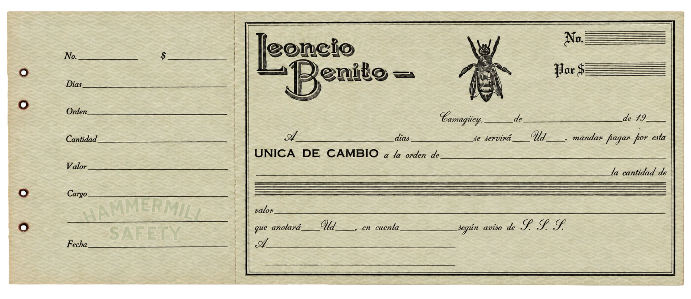

Registro Mercantil · 1962
Los antecedentes comerciales
La certificación recoge inscripciones desde 1910, incluida la bodega La Yaba y la constitución de Leoncio Benito y Compañía el 17 de marzo de 1923.
Ver escaneo completoArchivo documental · Camagüey
Ocho piezas conservadas en el fondo familiar permiten seguir la actividad comercial de la firma y el contexto de Leoncio Benito Rivas.
Fuentes originales
Abre cada escaneo completo para consultar el documento y sus reversos cuando los haya.
Registro Mercantil · 1962
La certificación recoge inscripciones desde 1910, incluida la bodega La Yaba y la constitución de Leoncio Benito y Compañía el 17 de marzo de 1923.
Ver escaneo completo
Consulado de España · 1933
Un certificado consular identifica a Leoncio Benito Rivas como comerciante residente en Camagüey.
Ver escaneo completo
Nueva York · 1934
Will & Baumer Candle Co. escribió sobre 33 sacos de cera de abeja y citó a The Royal Bank of Canada y Guaranty Trust Company en la gestión del pago.
Ver escaneo completo
Nueva York · 1939
Guaranty Trust Company propuso a Leoncio Benito posibles importadores de miel y cera en Estados Unidos.
Ver escaneo completo
Camagüey · 30 de noviembre de 1961
El INRA inició las gestiones para adquirir los activos de la entidad Leoncio Benito Rivas. El acta designa a un representante para asumir la dirección y determinar esos activos; no incluye un inventario ni una valoración.
Ver escaneo completo
Amberes · 1962
Arthur Hirsch & C° recordó una relación comercial de unos cuarenta años con la firma.
Ver escaneo completo
Camagüey · Sin fecha visible
Reconstrucción digital con IA para facilitar la lectura. El escaneo original se conserva como referencia documental.
Consultar imagen original Ver escaneo completo
Camagüey · Sin fecha visible
Formularios de las sucursales de The Bank of Nova Scotia y The Royal Bank of Canada en Camagüey. Uno lleva la marca «Leoncio Benito · Exportador de miel y cera». Están impresos como muestras, sin importe ni beneficiario cumplimentados.
Ver escaneo completoProcedencia y consulta
Las fechas y nombres de la historia de la firma se apoyan en las piezas del archivo familiar mostradas arriba. El registro mercantil documenta la constitución de 1923; la especialización en miel y cera desde ese año, la planta de San Ramón 206 y la participación en exposiciones proceden de la memoria familiar cuando no se indica otra fuente.
Se conservan fotografías de cinco folios de un directorio mecanografiado, sin fecha general segura. Identifica compradores de cera, agentes comerciales, navieras y rutas de la red. La relación de firmas y la síntesis del transporte recogen únicamente datos históricos de identificación y contexto.
Los modelos de cartas incluidos en esos folios ilustran procedimientos y no prueban que cada ejemplo fuera un envío efectuado.
La dirección telegráfica histórica era «Cable L Benito». El teléfono 2087 se ha comprobado en los directorios de 1949 y 1959; para 1961, la familia comunica el 2423. La letra de cambio conservada es un formulario en blanco y no contiene números de teléfono.